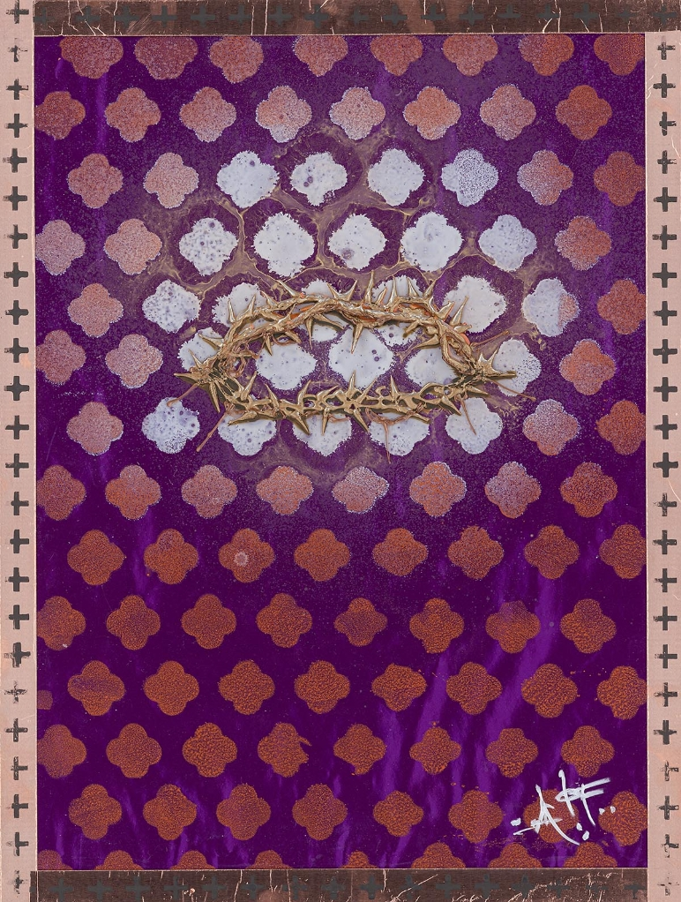

Crown of Thorns

Description:
In “Crown of Thorns,” artistic prodigy Autumn de Forest presents a luminous and regal interpretation of one of history’s most profound symbols. Moving away from the traditional depiction of gritty realism, de Forest elevates the iconography through a lens of majesty and reverence, bridging the gap between classical religious art and contemporary aesthetics.
The focal point of the piece is the crown itself, rendered not as brittle wood, but as a sculpture of gold. This choice shifts the narrative from one of pure suffering to one of divine kingship and glory. The crown floats against a rich, royal purple background—a color historically reserved for emperors and deities—patterned with a repeating quatrefoil motif that evokes the stained glass and architectural detailing of European cathedrals.
Surrounding the crown, the deep purple pattern dissolves into a glowing field of white and silver, creating a subtle, radiating halo that draws the viewer’s eye to the center. The composition is framed by a distinct border featuring a repeating cross motif, grounding the ethereal subject matter in structured design. This piece is a testament to de Forest’s ability to reimagine sacred themes with a modern, sophisticated touch.
Artwork Details:
- Medium: Mixed Media / Acrylic on Canvas (Archives may vary)
- Style: Contemporary Religious Iconography / Neo-Pop
- Key Elements: Gold metallic detailing, quatrefoil pattern, royal purple palette
- Signature: Hand-signed by the artist (Bottom Right)
- Dimensions
- 24 in x 18 in
- Reg. / Lot No.
- 404291